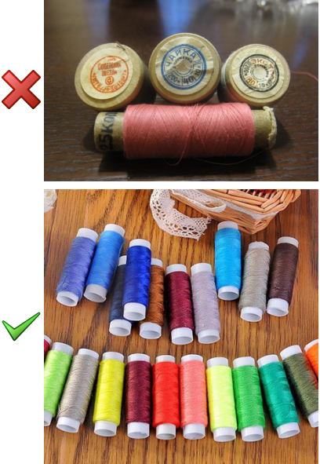

Типы ниток для швейных машин по составу и размеру
Для начала разберемся, какие нитки для швейных машин выпускают производители. Сразу оговоримся: старые хлопчатобумажные, выпускавшиеся еще во времена СССР, лучше исключить. Такими катушками пользовались в те времена, когда других вариантов просто не существовало. Даже при абсолютно правильной настройке машины трудностей с ними возникало немало. Современные швейные аппараты с ними работать отказываются наотрез.
100% хлопковые нитки
Используются, чаще всего, для пошива детской одежды, так как они состоят из полностью натурального волокна. Также они подойдут для шитья хлопковых тканей и декоративных вышивок.
100% полиэстровые (нейлоновые) нитки
Одни из наиболее универсальных и часто встречающихся в продаже. Они имеют хорошую закрутку, вследствие чего намного меньше «ворсятся» (чем хлопковые), а также их толщина по всей длине достаточно равномерна. Именно это делает строчку гладкой и красивой.
Полиэфирные штапельные нитки
Полиэфирные штапельные нити имеют хорошую эластичность, поэтому отлично подойдут для работы с трикотажем.
Нитки для оверлока и плоскошовной машины
Для работы на этих машинах удобнее всего использовать синтетические нитки, намотанные на большие бобины.

Шелковые нитки
Нитки из натурального шелка очень красивы, но они не отличаются особой прочностью. Могут быть использованы для машинной вышивки и рукоделия. Также их используют при работе с шелковыми тканями, для максимального совпадения с фактурой шелка.
Текстурированные нитки
Текстурированные нити отличаются повышенной объемностью и растяжимостью. Благодаря этому они идеально подходят для работы с трикотажем, обметывания краёв и делают настрочные швы особенно приятными на ощупь. Текстурированные нитки выпускают некручеными и кручеными, (последние предназначены для скоростных оверлоков).
Эластичная нить-резинка (спандекс)
В основании такой нити – спандекс, который затем покрыт полиэфирной оплёткой. Обладая способностью растягиваться в 4-7 раз, нить-резинка очень удобна для присбаривания деталей одежды. Для этого её устанавливают в машине как нижнюю нить и ослабляют натяжение верхней нити. Кроме того, нить-резинка служит прекрасной основой для бижутерии.